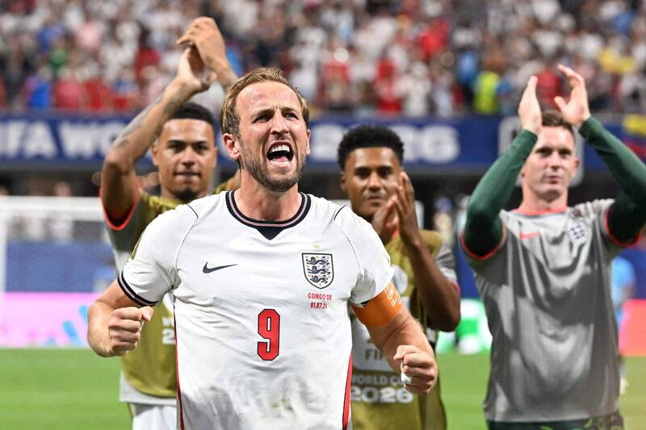

2026年7月2日週四 上午8:52
英格蘭今天在32強賽以2：1逆轉民主剛果，而比利時則在延長賽以3：2擊敗塞內加爾，上演驚天逆轉秀，本屆世界盃從小組賽迄今已累積了11場逆轉勝，締造賽史新高，也是唯一逆轉場次達雙位數的一次。
今年世界盃從小組賽起就有不少精彩逆轉秀，從小組賽首戰南韓逆轉捷克，還有民主剛果在小組賽最終戰後來居上，以3：1大勝烏茲別克，順利搶下淘汰賽門票。 進入32強賽，5屆冠軍巴西在先掉球情況下最後逆襲日本，加上今天英格蘭靠著隊長凱恩(Harry Kane)梅開二度帶隊逆襲，比利時更是神奇地在比賽尾聲追平，並在延長賽逆轉，多支球隊上演精采翻盤戲碼。...